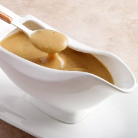

KFC Copycat Gravy

This recipe is a copycat version of KFC gravy.
Recipe by DecompileCodex
★★★★☆ 4.2 Stars
Prep Time: 5 mins - Cook Time: 40 mins
Servings: - 6 Yield: 2 cups
Ingredients
- L3 tablespoons butter, divided
- 1 small onion, finely chopped
- 5 tablespoons unbleached all-purpose flour
- 2 ½ cups water
- 2 teaspoons beef bouillon
- 2 teaspoons chicken bouillon
- freshly ground black pepper to taste
Directions
- Melt 1 1/2 tablespoons butter in a skillet over medium heat.
Add onion; cook and stir until translucent, about 5 minutes.
- Add remaining 1 1/2 tablespoons butter and let melt.
Whisk in flour to form a thick paste the consistency of cake frosting.
- Continue cooking, whisking constantly,
until flour has turned golden and begins to smell like toast, about 20 minutes.
- Whisk in water and both bouillons until no lumps remain.
Stir in pepper and bring mixture to a boil.
- Cook and stir until thickened to gravy consistency, 8 to 10 minutes.